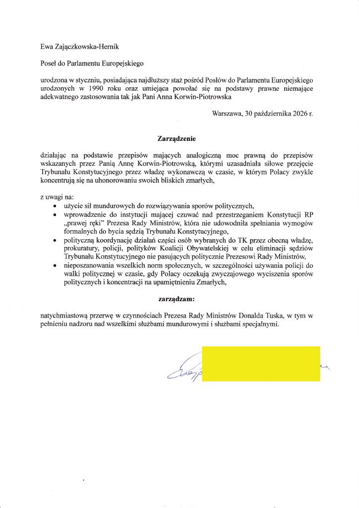
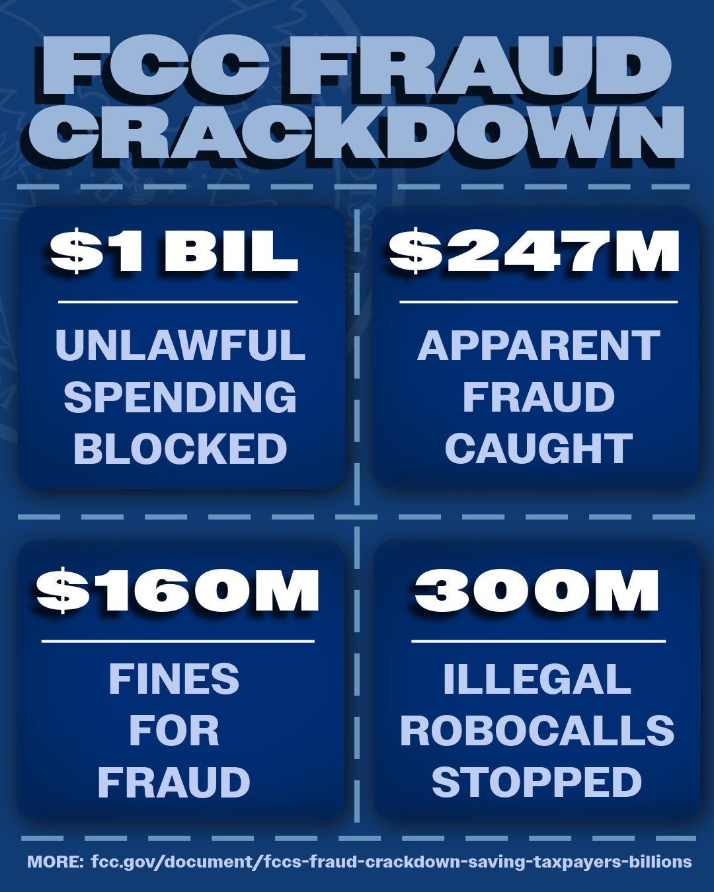
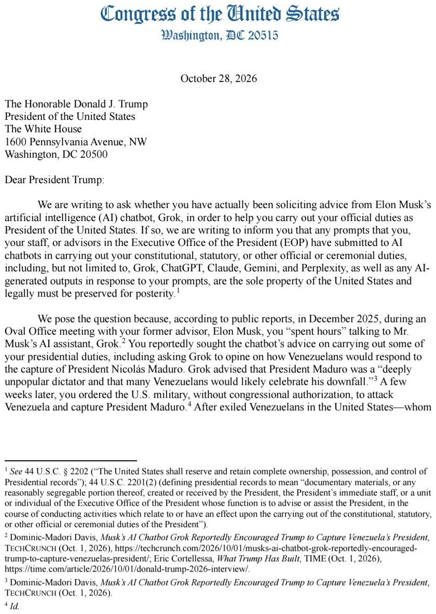
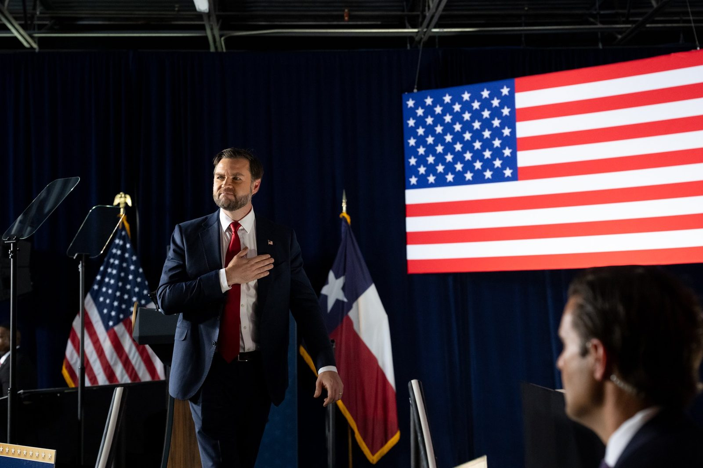
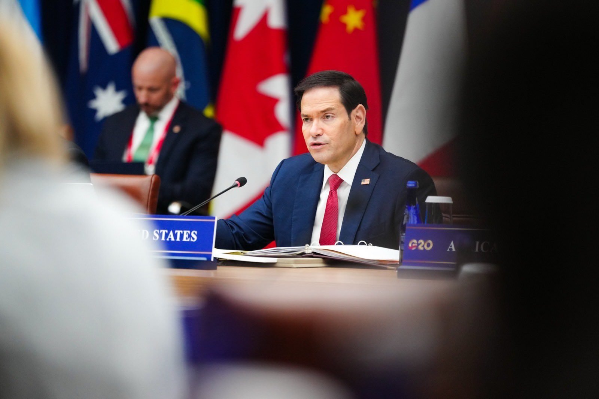

🚨🇵🇱COUP UNDERWAY IN POLAND!
PM Donald Tusk has just sent police to storm Constitutional Tribunal building in Warsaw in the middle of the night.
Tusk waited until President Karol Nawrocki left the country before ordering the police takeover.
Nawrocki was halfway to Senegal when he abruptly turned his plane around and rushed back to Poland to confront the unfolding crisis.
The EU, which backs Donald Tusk, has STILL NOT issued a statement on this unprecedented crisis or condemned the attempted coup.
🇵🇱 For everyone asking what's happening in Poland tonight, here are the key points:
1. The Constitutional Tribunal's leadership has been challenged.
Judge Anna Korwin-Piotrowska issued orders suspending Tribunal President Bogdan Święczkowski and Vice-President Bartłomiej Sochański from their duties for one month. She claims authority to take over the Tribunal's leadership as its most senior judge.
2. Why did she do this?
Korwin-Piotrowska accuses the existing leadership of obstructing the work of judges elected by the current parliamentary majority, violating judicial procedures and preventing the proper functioning of the Tribunal. She also raised concerns about the court's 2027 budget.
3. The Tribunal rejects the orders.
Its existing leadership says the official website was illegally taken over and insists that Święczkowski remains president. The legality of Korwin-Piotrowska's decisions is disputed.
4. Police entered the building.
Following the announcement, demonstrators gathered outside the Tribunal. Tensions escalated, with some people reportedly climbing over the fence and throwing objects at police officers. Police intervened and several people were detained.
5. Why is this Tribunal so important?
The Constitutional Tribunal determines whether laws and other legal acts comply with Poland's Constitution. Its decisions can affect legislation, government actions and the country's entire legal system. Control over its leadership therefore has major constitutional and political significance.
6. This conflict has been building for months.
Prime Minister Donald Tusk's government and President Karol Nawrocki have been locked in a dispute over the Tribunal's composition. Nawrocki refused to swear in three judges elected by parliament, while the Tribunal's existing leadership refused to allow judges appointed by the current parliamentary majority to take their seats.
Tusk's government does not recognise the Tribunal's legitimacy and has refused to publish some of its rulings, citing controversial judicial appointments made under the previous PiS government.
7. Political reactions are escalating.
PiS leader Jarosław Kaczyński called on President Nawrocki to intervene, accusing Tusk's government of turning Poland into a police state. Nawrocki cancelled his trip to Senegal and announced that he is returning to Poland.
Tusk, meanwhile, says restoring the rule of law is a difficult but necessary process.
The situation is still developing. Both sides dispute the legality of the actions taken, and the legal authority behind the latest orders remains unresolved.
Poland is now facing one of its most serious institutional confrontations in recent years. What happens next will depend on whether the two sides can resolve this dispute through legal and constitutional channels or whether the standoff escalates further. For now, Warsaw remains at the centre of a crisis that could have far-reaching consequences for the country's institutions and political future.
Under the cover of night and in the absence of the President of the Republic of Poland from the country, the police have forcibly taken control of the empty Constitutional Tribunal building.
The police claim that activities posing a threat to health and life were allegedly taking place inside the vacant building over the weekend. Despite this, the Tribunal’s own security personnel, the Vice-President of the Tribunal, and its director are being denied entry. In violation of the law, the police officers have obscured the identification numbers and names on their uniforms—a practice typically employed when an officer knows they are breaking the law and wishes to avoid being identified.
President Karol Nawrocki has ordered the presidential aircraft, which was en route to Senegal, to turn back; he is now returning to Poland. Previously, the President had warned Prime Minister Donald Tusk that any attempt to forcibly enter the Constitutional Tribunal would be met with a firm response.
Article 128 of the Polish Penal Code stipulates that anyone who, with the intent to remove a constitutional body of the Republic of Poland by force, engages in activities directly aimed at achieving this objective, is subject to a prison sentence of up to 20 years.
Two years ago, the President of the Constitutional Tribunal filed a notification with the prosecutor's office, alleging that the government—under the direction of Prime Minister Donald Tusk—had committed the crime of a coup d'état. The process of authoritarian consolidation in Poland continues. The assault on the Constitutional Tribunal and the President represents the final stages of a complete, undemocratic seizure of power.
Once again in its history, Poland is fighting against totalitarianism.
Zarządzam natychmiastową przerwę w czynnościach Prezesa Rady Ministrów Donalda Tuska, w tym w pełnieniu nadzoru nad wszelkimi służbami mundurowymi i służbami specjalnymi.
Liczę, że pismo zostanie potraktowane tak samo poważnie, jak ten świstek pani Korwin-Piotrowskiej, która w taki sam sposób zastąpiła prezesa TK pod dyktando bandy Tuska.

The images out of Poland are insane
There are protestors trying to stop the coup and the Police have taken Tusk's side
This shouldn't be happening
Right now Poland's long-running constitutional crisis over the top court has escalated sharply. Police are on the Constitutional Tribunal grounds after protests and reported disorder. A judge ordered the suspension of the tribunal president and vice-president; the other side calls it an illegal takeover. President Nawrocki cut short his Senegal trip and is returning. The court has been largely paralyzed by appointment disputes between the Tusk government and the president. Inflation is at 3.5%; a new Baltic port terminal opened.
Donald Tusk is committing high treason in Poland for the world to see.
The EU is staging a coup to remove Polish President Karol Nawrocki who has now cut short a trip to Senegal today, and is quickly returning to Warsaw. Polish police have now seized the country's Constitutional Tribunal building.
The EU doesn’t want Poland to leave the EU, so they’re seizing the country.
Shits getting serious.
The European Union is about to fall.
My Polish friend says Tusk has cancelled major infrastructure projects because they compete with Germany - New port to compete with Hamburg - cancelled. New Airport to compete with Frankfurt - cancelled. New nuclear power station - cancelled. loads of other projects cancelled.
From today, charities can apply to sponsor refugees through new, capped Named Community Sponsorship and Refugee study safe and legal routes.
Sponsors will provide accommodation, integration support and help finding work.
First arrivals are expected in autumn 2027.
JUST IN: 🇵🇱 Polish MEP issues mock order suspending Prime Minister Donald Tusk from all duties, including control of police and security services.
Today, I joined my colleagues @FBIDirectorKash, @DrOzCMS, @AFergusonFTC, and @AAGMcDonald in Minnesota as we move to the next phase of our fight against fraud. Treasury is deploying every tool to hold perpetrators to account.
The industrial-scale fraud that Tim Walz and his administration allowed to fester is his defining legacy. But with President Trump back in office, Washington is no longer content to watch Minnesota’s fraud epidemic spiral from a distance.
The days of indifference are over. Under @POTUS’s leadership, wherever the money leads, the full weight of the federal government will follow.
The FCC’s Fraud Crackdown is saving Americans billions of dollars in illegal, wasteful, and unnecessary spending.
Pleased to work with @WHFraudTF on this important effort.

DOJ busts 'ghost students', seizes $750k in stolen financial aid sent to Kenyan safari outfit
BREAKING: The DOJ’s “Operation Ghostbusters” has flagged 830,840 potentially fraudulent federal student aid IDs, tied to nearly $130 million, in a scheme that allegedly used stolen American identities to enroll fake “ghost students” and send the aid money to Kenya.
5 charged, $32M+ in confirmed losses so far, $750K+ in crypto seized, and DOJ estimates the total fraud since 2021 at well over $200 million.
Today, HUD launched the Public Housing Authority Accountability Dashboard.
Taxpayers fund public housing.
They deserve to see how it performs.
Search any housing authority in America.
#BREAKING: Indian national pleads guilty to $227M Medicare fraud in Illinois.
The ranking members of the House Judiciary and Oversight Committees have written a letter to President Trump asking whether he has been soliciting advice from Grok in order to help carry out his official duties as President of the United States.
They also demanded that he preserve any prompts sent to Grok, ChatGPT, Claude, Gemini, and Perplexity, as well as outputs in response to those prompts, that were 'submitted to AI chatbots in carrying out your constitutional, statutory, or other official or ceremonial duties.'
The letter was provided by Politico.


JUST IN: House Democrats demand access to President Trump's conversations with Grok.
Democrats Admit Their Top Priority Is Illegal Aliens, Not “Affordability”
SANCTUARY NY RELEASES ILLEGAL ALIEN AFTER ARREST FOR ASSAULTING A POLICE OFFICER!
Alpha Bah, an illegal alien released into the U.S. under the Biden administration, was arrested for assaulting a police officer with a deadly weapon.
Despite an ICE detainer, NYPD RELEASED Bah without notifying ICE. He had been arrested and released twice before and remains AT LARGE.
Bah’s case is far from isolated. Since President Trump took office, the state of New York has failed to honor 16,070 ICE detainers associated with 52,503 criminal charges and convictions.
While sanctuary politicians release violent criminals back onto our streets, putting American lives at risk, the patriots of ICE are working around the clock to remove them from our country.
California sanctuary cities ignored nearly 9K ICE detainers - freeing violent criminals: report
DHS says it has revoked or moved to terminate the immigration status of 2.2 million migrants who entered under Biden-era policies since Trump took office.
Federal Court allows Rubio to suspend Visa Lottery
🚨🌍 Russia this Morning
The is the Novokuybyshevsk Oil Refinery on Fire after a Huge Ukrainian Drone & Missile Attack
You all know the EU & particularly the UK & France are in part behind this right - this makes you at War with Russia & the cost of everything just went up again
Novokuibyshevsk oil refinery in Russia after Ukrainian drone strikes today.
JUST IN: 🇺🇦🇷🇺 Ukraine strikes Russian oil refinery, ending pause and defying Trump, WSJ reports.
Some further clarity on Binance’s claim that customer funds are safe: The assets were drained from one of its hot wallets, which Binance controlled and is the legal owner of.
What does that mean? Generally, when you deposit crypto on an exchange, the exchange becomes the owner and gives you a claim on their assets. Retail customer assets are generally accounted for in an omnibus account with all other retail customer assets, and customers have a claim on a pro rata share.
A spokesperson confirmed this to Crypto in America and said the assets were technically Binance’s funds, and represented customers’ ownership claims for crypto on the exchange. Binance holds crypto in its wallets and credits customers’ accounts with the assets bought on their behalf.
Binance says it is replacing the stolen assets so customers’ account balances and values remain unchanged. Had Binance not had sufficient funds to account for the stolen assets, some customers may have had their recovery reduced, or received a “haircut.”
The exchange says it has reserved more than $6.34 billion in company funds to cover the incident.
JUST IN: 🇺🇸 CFTC proposes new regulations for crypto exchanges to strengthen security against cyberattacks.
The United States is leading the charge to strengthen global energy security for a more prosperous future.
The world needs energy addition—not subtraction or transition—for future prosperity.
This means multiple energy sources, multiple supplier economies, and multiple delivery routes.

It was an honor to ring the closing bell at the @TXStockExchange today.
In many ways, Texas reflects the best of what we are working toward at the @SECGov: capital markets where American enterprise flourishes, and with them the American people whom we serve.
Ilhan Omar was so confused by marriage to 'brother' she crossed out her own name twice on official application
Ilhan Omar's ex-husband, rumored to be her brother, says he’s gąy, per TMZ.
Blakeman dares Hochul to sign 'no new taxes' pledges after she refused to say if hikes were coming post-election
Neuralink’s first product is called Telepathy.
It enables high-speed communication with computers or humans simply by thinking. Output bandwidth will vastly exceed the fastest human speech or typing in a few years. Read that sentence again.
Our second product is called Blindsight and it will, as the name suggests, enable even those who are completely blind or have never seen to see.
It is ready from an engineering standpoint. Just waiting on regulatory approval.
BREAKING: Trump tells El Salvador's President Nayib Bukele to "do what you have to do" as he prepares to send thousands of troops into Haiti to combat violent gangs.
JUST IN: 🇺🇸 Florida arrests 31 suspected child predators accused of traveling to have sex with minors, including several Disney employees.
JUST IN: Canada eliminates its avalanche rescue dog program in the Rocky Mountains amid government budget cuts, sparking public outrage.
BREAKING: DOJ Directed to Start Criminally Subpoenaing State and Local California Officials Involved in Illegal Voting